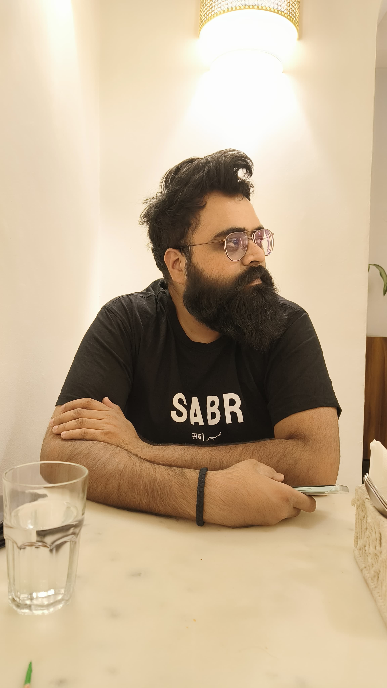

Kumar Kaustubh | Artificial Intelligence (AI) Researcher

Summary
I am an AI Researcher currently working as a Technical Lead at HCLTech Engineering and R&D Services (ERS),
AITech, where I focus on implementing AI-based solutions for speech processing tasks.
I hold a master’s degree in Electrical Engineering from the Indian Institute of Technology Dharwad (IIT-Dh).
My thesis involved detecting depression
from speech signals using Machine Learning (ML) and Deep Learning (DL) techniques.
Education
- Master of Science (MS) in Electrical Engineering - Indian Institute of Technology Dharwad (IIT-Dh) | Aug 2022 to Aug 2024 | CGPA: 7.41/10
- Bachelor of Technology (B.Tech) in Electronics and Communication Engineering - Dr. APJ Abdul Kalam Technical University | July 2015 to July 2019 | Percentage: 68.9%
- Class XII - Kendriya Vidyalaya Gomtinagar Lucknow | April 2012 to April 2013 | Percentage: 62.4%
- Class X - Kendriya Vidyalaya Gomtinagar Lucknow | April 2010 to April 2011 | CGPA: 9.2/10
Work Experience
-
Technical Lead - HCLTech Engineering and R&D Services (ERS)
October 2024 - Present
- Collaborating with the AITech team to develop AI-based solutions for speech processing challenges
- Involved in conducting literature surveys and writing feature extraction code
-
Project Associate II - Indian Institute of Technology, Dharwad
Feb 2024 - May 2024
- Worked on a project sponsored by the Science and Engineering Research Board (SERB), Department of Science and
Technology, Government of India
- Involvement in development of Automatic Speech Recognition (ASR) module using Kaldi Toolkit for standalone
domain specific speech-to-speech (S2S) translator for English, Hindi and Tamil languages.
- Explored different acoustic models like GMM-HMM, CNN, etc. using Kaldi Toolkit
- Involvement in multi-lingual data collection process and statistical analysis for Indic languages for second DISPLACE
(Diarization of Speaker and Languages in Conversational Environment) Challenge 2024
- Project Assistat - Indian Institute of Technology, Dharwad
Aug 2022 - Jan 2024
- Worked on a project sponsored by the Department of Biotechnology (DBT), Ministry of Science and Technology,
Government of India, for the detection and classification of depressed speech.
- Involved in the cleaning process for speech
data and structuring it for building classification models.
-
Developed numerous handcrafted features using
the openSMILE toolkit, denoising autoencoders and rhythm formants.
-
Employed various transformer-based models such as Audio Spectrogram Transformers (AST), Data Efficient Image
Transformers (DeiT), etc. and mixer models like ConvMixer and MLPMixer on speech spectrograms.
-
- Teaching Assistant - Indian Institute of Technology, Dharwad
Aug 2023 - Nov 2023
-
Assumed responsibility for overseeing speech processing labs, crafting problem statements for lab assignments, and
formulating questions for theory examination for speech processing course.
Publications
-
Kumar Kaustubh, Parismita Gogoi and S.R. Mahadeva Prasanna, “Rhythm Formant Analysis for Automatic
Depression Classification”, in 25th International Conference on Speech and Computer (SPECOM)/ (Springer-Verlag),
Nov 29, 2023, Dharwad, India
-
Kumar Kaustubh, Lokesh Kumar, Achyut Mani Tripathi and S.R. Mahadeva Prasanna, “Depression Classification
using Token Merging-based Speech Spectrotemporal Transformer”, in 26th International Conference on Speech and
Computer (SPECOM)/ (Springer-Verlag), 28 November 2024, Crowne Plaza, Belgrade, Serbia
-
Kumar Kaustubh, Lokesh Kumar, Shashaank Aswatha Mattur and S.R. Mahadeva Prasanna, “ Depression
Classification Using Log-Mel Spectrograms: A Comparitive Analysis of Window Size-based Data Augmentation and
Deep Learning Models”, in 27th International Conference of the Oriental Cocosda (O-Cocosda), 17-19 October 2024,
National Yang Ming Chiao Tung University, Hsinchu, Taiwan
Skills
- Skills: Machine Learning, Deep Learning, Signal Processing, Data Analysis, and Software Development Life Cycle (SDLC)
- Programming Languages: Python, C, and MATLAB
- Developer Tools/Software: PostgreSQL, Praat, Jupyter Notebook, GitHub, LaTeX
- Frameworks/Libraries: TensorFlow, PyTorch, Librosa, Pandas, NumPy, SciPy, Scikit-Learn, Matplotlib